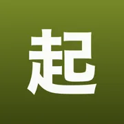
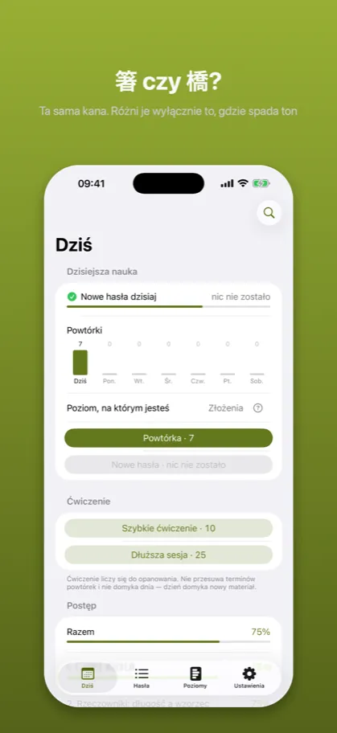
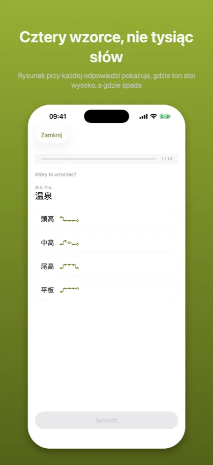
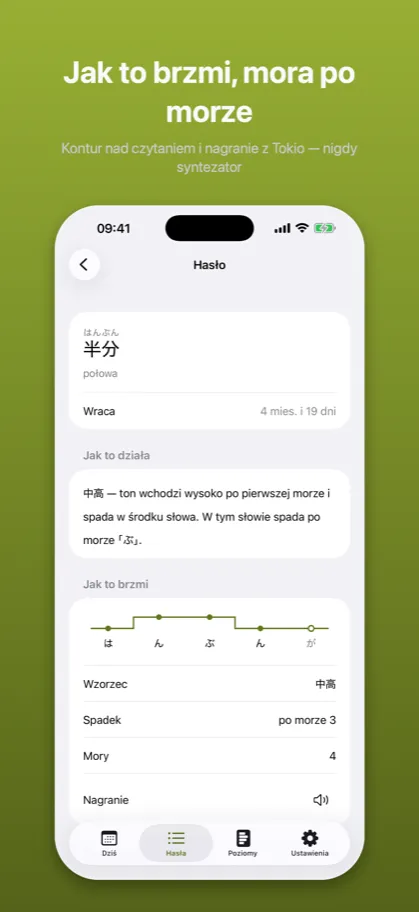
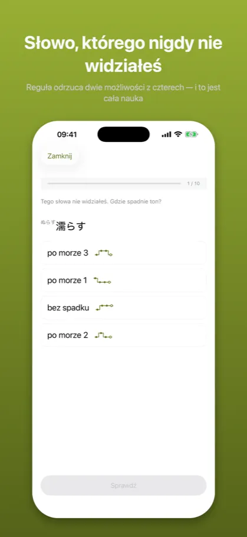
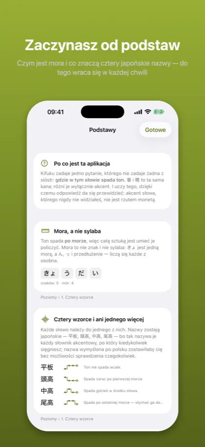

Kifuku: Akcent japoński起伏
Wymowa, intonacja, słuchanie
App Store →Aplikacja darmowa, z zakupem w środku
Japoński ma warstwę, której kana nie zapisuje. 箸 i 橋 pisze się tak samo i nie są tym samym słowem – a różnica to reguła do nauczenia, nie lista do wykucia.
Jak to wygląda
{kind=link}

Ta sama kana. Różni je wyłącznie to, gdzie spada ton
{kind=link}

Rysunek przy każdej odpowiedzi pokazuje, gdzie ton stoi wysoko, a gdzie spada
{kind=link}

Kontur nad czytaniem i nagranie z Tokio — nigdy syntezator
{kind=link}

Reguła odrzuca dwie możliwości z czterech — i to jest cała nauka
{kind=link}

Czym jest mora i co znaczą cztery japońskie nazwy — do tego wraca się w każdej chwili
Opis ze sklepu
Kifuku uczy japońskiego akcentu tonicznego – warstwy języka, której kana nie zapisuje.
箸 i 橋 to obie はし. 雨 i 飴 to obie あめ. Nic w zapisie ich nie rozróżnia; robi to wyłącznie miejsce, w którym spada ton. Większość kursów wspomina o tym raz i idzie dalej, bo wygląda to na tysiące faktów do zapamiętania. Nie jest. To w większości reguły – i ta aplikacja jest zbudowana po to, żeby pokazać które.
CZTERY UMIEJĘTNOŚCI MIERZONE OSOBNO
Reguły – gdzie spada ton w słowie, którego nigdy nie widziałeś. Ta jedna mierzona jest wyłącznie na słowach spoza twoich powtórek, więc odpowiada na pytanie, którego pamięć nie podrobi.
Wzorce – który z czterech wzorców ma słowo: 平板, 頭高, 中高, 尾高.
Odmiana – co dzieje się z akcentem, gdy słowo się odmienia: 〜ます, 〜た, 〜ない, 〜て.
Słuch – gdzie spadek pada w nagraniu.
Można znać akcent każdego słowa ze swojej listy i dalej nie przewidzieć nowego. Aplikacja, która uśredni te cztery liczby w jedną, nie ma jak ci tego pokazać. Ta pokazuje.
KAŻDA REGUŁA NIESIE SWOJE POKRYCIE
Reguła bez liczby uczy fałszywej pewności. „Czasowniki mają akcent na przedostatniej morze" jest bezużyteczne, dopóki nie wiadomo, jak często – więc każda reguła pokazuje tu swoje pokrycie, policzone na słowniku 340 tysięcy haseł i widoczne dla ciebie, a nie schowane w kodzie.
PRAWDZIWE NAGRANIA, NIGDY SYNTEZATOR
Głos systemu nie obiecuje, że przeczyta 箸 jako 頭高, a 橋 jako 尾高 – a na tej różnicy stoi cała aplikacja. Dlatego nie ma tu syntezy mowy w ogóle, tylko nagrania mówcy z Tokio. Tam, gdzie nagrania nie ma, przycisk mówi o tym wprost, zamiast odtwarzać coś, za co nie ręczymy. To jedyne miejsce, w którym cisza jest uczciwsza od dźwięku.
PIĘĆ POZIOMÓW, NIE JLPT
- Cztery wzorce – mora, schemat ○●● i co znaczą cztery nazwy.
- Rzeczowniki – jak długość słowa przewiduje jego wzorzec.
- Czasowniki i przymiotniki い – reguła, która robi najwięcej roboty.
- Odmiana – dokąd wędruje spadek, gdy słowo się odmienia.
- Złożenia – co się dzieje, gdy dwa słowa zrastają się w jedno.
Akcent nie należy do poziomu egzaminu. 箸 i 橋 pojawiają się pierwszego dnia i nie ma ich w żadnej liście N5.
STANDARD TOKIJSKI, POWIEDZIANY WPROST
Wszystko tutaj to standard tokijski – akcent słowników, radia i podręczników. Jest jednym ze standardów, a nie „japońskim". W Kansai wiele z tych słów ma inny akcent i nie jest to błąd w żadną stronę. Aplikacja mówi o tym na własnych ekranach, nie drobnym drukiem.
POWTÓRKI, KTÓRE ZNAJĄ RÓŻNICĘ
Słowa wracają terminem, bo są faktami, a fakty blakną. Reguły tak nie wracają – reguły się nie zapomina, tylko jej nie stosuje, a to widać w pomyłkach, nie w kalendarzu. Jedno i drugie chodzi tu innym trybem, celowo.
BEZ KONTA, BEZ SIECI, BEZ AI
Wszystko działa na urządzeniu. Nic nie jest wysyłane, nic nie jest śledzone, a aplikacja działa z wyłączoną siecią. „Nie zbieramy danych" nie jest tu obietnicą, tylko opisem.
DARMOWE I PŁATNE
Poziomy 1 i 2 są darmowe w całości – razem z pierwszą regułą przewidującą, więc obie natury materiału widać przed decyzją. Jeden zakup odblokowuje poziomy 3–5. Bez abonamentu.
Źródła są podane w aplikacji: dane akcentowe z UniDic (NINJAL), nagrania ze zbioru wymowy Tofugu i WaniKani.
Powyższy opis jest tym samym tekstem, który stoi na karcie aplikacji w App Store – pochodzi z tego samego pliku.
App Store →Aplikacja darmowa, z zakupem w środku
Częste pytania
Czego uczy Kifuku?
Kifuku uczy japońskiego akcentu tonicznego – warstwy języka, której kana nie zapisuje.
箸 i 橋 to obie はし. 雨 i 飴 to obie あめ. Nic w zapisie ich nie rozróżnia; robi to wyłącznie miejsce, w którym spada ton. Większość kursów wspomina o tym raz i idzie dalej, bo wygląda to na tysiące faktów do zapamiętania. Nie jest. To w większości reguły – i ta aplikacja jest zbudowana po to, żeby pokazać które.
Ile kosztuje Kifuku?
Poziomy 1 i 2 są darmowe w całości – razem z pierwszą regułą przewidującą, więc obie natury materiału widać przed decyzją. Jeden zakup odblokowuje poziomy 3–5. Bez abonamentu.
Źródła są podane w aplikacji: dane akcentowe z UniDic (NINJAL), nagrania ze zbioru wymowy Tofugu i WaniKani.
Czy działa bez internetu i bez konta?
Wszystko działa na urządzeniu. Nic nie jest wysyłane, nic nie jest śledzone, a aplikacja działa z wyłączoną siecią. „Nie zbieramy danych" nie jest tu obietnicą, tylko opisem.
Dokumenty
Pozostałe aplikacje
- Kaname: Gramatyka japońska — Powtórki JLPT: N5 N4 N3 N2 N1
- Bunmyaku: Japoński w zdaniu — Słówka, kanji i furigana
- Katsuyokei: Odmiana japońska — Czasowniki, formy, fiszki
- Joshi: Partykuły japońskie — Gramatyka i ćwiczenia JLPT
- Kazoekata: Liczniki japońskie — Liczenie, kanji, ćwiczenia
- Kuzushi: Mowa potoczna — Anime, dorama i skróty
- Shindan: Poziom japońskiego — Test JLPT: N5 N4 N3 N2 N1
- Keigo: Grzeczność japońska — Japoński formalny do pracy
- Onomatope: Dźwięki i wyrażenia — Słówka z mangi i anime